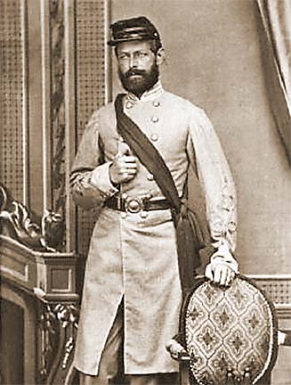

|
Officially named Camp Sumter, the notorious Andersonville
Prison was one of the largest prison camps during the
American Civil War.
In the latter part of 1863, Union forces began
penetrating deeper into the southern states. As a result,
Confederates captured prisoners of war in greater numbers
than ever before. This influx quickly proved that the
detention facilities used during the prior two years of
war--mainly old forts, warehouses and jails--were
insufficient. The Southern captors feared that the
prominent presence of Yankee prisoners would increase the
possibility of overrunning the northernmost facilities just
as they had threatened Richmond, the Confederate capital, in
1862.
In order to rectify the problem, Captains W. Sidney
Winder and Boyce Charwick, were sent to Georgia in November
|
Stories of the horrors at Andersonville--and pictures of the prison's
survivors, like this one--enraged the Northern public. Though Andersonville certainly
deserved its poor reputation, most other Civil War prison camps were just as bad, both in
the North and the South.
|
of 1863 to scout a potential prison site in Sumter County
near the town of Andersonville. They determined that the
area in south-central Georgia was an ideal location for the
facility because it was, at the time, far from the reach of
the Union forces. Other reasons for selecting the area
included the availability of potable water from a nearby
creek, the close proximity of the Georgia Southwestern
Railway, and the plentiful timber supply. In addition,
because the town of Andersonville itself had a population of
only about twenty people, little political resistance to the
facility developed. Finally, local slaves could be
impressed by the army to build the prison.
Fort Sumter's construction began in December of 1863 and
was overseen by its quartermaster, Captain Richard B.
Winder. On February 24, 1864, six-hundred prisoners from
Libby Prison in Richmond, Virginia arrived. One entire wall
of the stockade was still under construction. Confederate
artillery pieces were positioned by the opening to deter any
attempts to escape until the work was finished. Once
completed, the walls of the prison formed a rectangle of
rough hewn pine standing fifteen to twenty feet in height
and built on a sixteen and one-half acre tract intended to
house no more than 10,000 Union prisoners of war.
During the first few months, conditions at Andersonville
were fair. But by July the facility was jammed with over
32,000 soldiers, almost all enlisted men. This increase
occurred because of renewed Union aggression Northern
officials had decided to stop the exchange of prisoners.
They believed that keeping southern soldiers in northern
prisons would deprive the South of desperately needed
manpower and thus hasten the end of the war.
The Northern leadership's decision was a hard blow for
Union soldiers in prisons like Andersonville. The open-air
stockade was expanded to 26 acres but remained horribly
overcrowded and conditions became more and more intolerable.
Nevertheless, thousands of soldiers continued to be shipped
to the prison. Running through the middle of the camp was a
stagnant stream, sarcastically referred to as "Sweet Water
Branch," which served as a sewer as well as a source of
water for bathing and drinking. There were no barracks;
prisoners were forbidden to construct shelters. Some did
erect tents, but most were left fully exposed to the
elements. No clothing was distributed to the captives so
most wore ragged remnants of their uniform or sometimes
nothing at all. Medical treatment and supplies were
virtually nonexistent.
With the South barely able to provide for its own men,
the prisoners starved. Their daily diet might consist of
only rancid grain and a few tablespoons of beans or peas.
The poor food and sanitation, the lack of shelter and health
care, the crowding and the hot Georgia sun took their toll
in the form of dysentery, scurvy, and malaria. Captain Henry
Wirz, who assumed command of Andersonville in June of 1864,
wrote the Confederacy's War Department to ask for additional
supplies to sustain the prisoners but received no
assistance. Attempts to improve the situation were futile,
given the limited supplies available. Beyond that, many
|

Andersonville commandant Henry Wirz was the only
person to be executed for war crimes after the Civil War.
|
embittered Confederates were unwilling to do anything to
make conditions better because they believed that all Union
soldiers should die.
During the summer months, more than 100 prisoners died of
disease on a daily basis. Others fell victim to thieves and
marauders among their fellow captives. The desperate
situation led a Confederate medical commission to recommend
relocating those prisoners who were not too ill to move, and
in September 1864, as William T. Sherman's army approached,
most of Andersonville's able-bodied inmates were sent to
other camps.
Remaining in operation until the war's conclusion,
Andersonville held more captured Union soldiers than any
other Confederate camp, a total of over 45,000. Nearly
thirty percent of these died in captivity. The North had
learned of the camp's appalling conditions well before the
emaciated survivors were released in April of 1865, and
outraged citizens urged retribution on Southern prisoners of
war. Of course, the Union had wretched prison camps of its
own. Death rates were high in some of these as well, even
though the North was far better equipped to cope with
captured soldiers. Mismanagement and severe shortages were
more to blame for the terrors of Andersonville than any
deliberate attempt to mistreat prisoners. Nevertheless, many
Northerners insisted that the abuse was deliberate and
demanded vengeance. Consequently, after being tried by a
U.S. military court and convicted of war crimes, Henry Wirz
was hanged. Meanwhile, government workers led by Clara
Barton compiled a list of 12,912 prisoners who had died at
the camp. Andersonville's mass graves were replaced by a
national cemetery, which is today still used as a burial
ground for American veterans.
Source: Joan Waugh, ed., Facts on File Encyclopedia of American
History: Civil War and Reconstruction, 1856 to 1869 (New York: Facts on
File, 2003), 10-11.
|